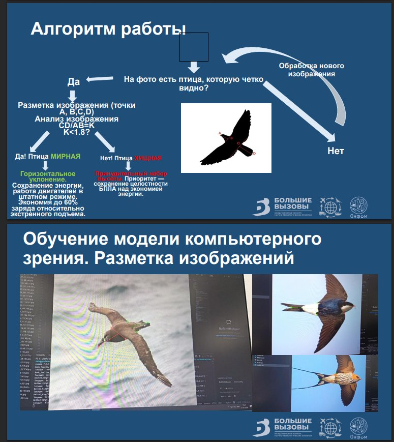

КОМПЬЮТЕРНОЕ ЗРЕНИЕ · БЕСПИЛОТНЫЕ СИСТЕМЫ
Распознавание птиц
для манёвра БПЛА
Исследование возможности различать хищных и мирных птиц по силуэту, чтобы использовать результаты распознавания при выборе манёвра уклонения беспилотного летательного аппарата.
Подробнее о проекте ＋
Я изучала особенности силуэтов птиц, собирала и размечала изображения, сравнивала геометрические параметры и анализировала полученные данные. Для обработки изображений использовала Python и OpenCV, для проверки гипотез — статистические методы.
В ходе работы мы исследовали, какие особенности силуэта могут помочь различать группы птиц, и рассматривали, как результаты распознавания можно использовать при выборе манёвра БПЛА.
Мой вклад: сбор и разметка изображений, анализ геометрических признаков, обработка данных и проверка исследовательских гипотез.